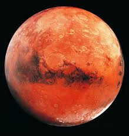

Mars: The Planet of Possibilities
Introduction

Mars is the fourth planet from the Sun, called the “Red Planet” due to iron oxide in its soil. It is cold, desert-like, with a thin atmosphere. Evidence shows Mars once had flowing liquid water.
Formation & Evolution
Mars formed early from dust, gas, and debris. Gravity shaped it into a protoplanet with core, mantle, and crust. Early volcanism released gases, forming a thin atmosphere. Ancient Mars was warmer with rivers, lakes, and possibly oceans.
Over billions of years, Mars lost much of its atmosphere due to weak gravity and solar wind, leaving a cold desert world. Polar ice caps and dry riverbeds hint at its wetter past.
Key Characteristics
- Half the size of Earth; lower gravity; reddish-orange surface
- Smooth northern plains, cratered southern highlands, Olympus Mons
- Valles Marineris canyon system spans thousands of km
- Polar ice caps of water ice and frozen CO₂
- Impact craters like Hellas Planitia; evidence of past water
- Frequent dust storms; avg temp: –62°C (–80°F)
Mars Atmosphere
Extremely thin and cold atmosphere:
- Carbon dioxide (~95%)
- Nitrogen and argon
- Trace oxygen, water vapor, and dust
Surface pressure ~600 Pa (<1% of Earth). No strong ozone layer. Seasonal CO₂ ice changes at poles.
Orbits & Motion
- Orbital period: 687 Earth days (1.88 Earth years)
- Rotation (sol): 24 hours 37 minutes
- Axial tilt: 25°, creating seasons
Mars has two moons:
Phobos: Larger, closer, heavily cratered, orbit <8 hrs, rises in west, may form ring in ~50M yrs.
Deimos: Smaller, smoother, orbit ~30 hrs.
Both are tidally locked, likely captured asteroids.
Key Missions
NASA:
- Curiosity – studied habitability
- Perseverance – searching for past life and collecting samples
- MAVEN – studies atmospheric loss
- Mars Reconnaissance Orbiter – evidence of water
ISRO:
- Mars Orbiter Mission (Mangalyaan) – surface & atmosphere study
- Mangalyaan-2 – planned mission with lander